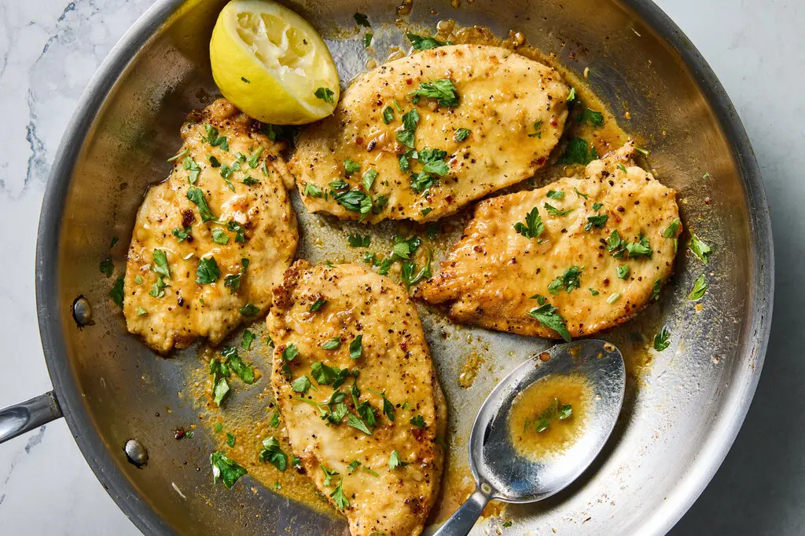

Home
How to do Lemon-Pepper Chicken Breasts
Preparation
Step 1
Cut the chicken breasts in half horizontally and place them on a large plate.
Step 2
Combine the flour and lemon-pepper seasoning in a small bowl and mix with a fork. Sprinkle the mixture evenly over the chicken breasts, turning to coat all sides and patting to adhere.
Step 3
Heat a large (12-inch) pan over medium-high. Add the oil and, working in batches, cook the chicken breasts for 3 to 4 minutes on each side, until browned and cooked through. (Add more oil if necessary. If the oil begins smoking at any point, turn down the heat.) Transfer the chicken breasts to a plate, and drain and discard any remaining oil.
Step 4
Add the butter and garlic to the pan, and stir over medium-low heat for 30 seconds to 1 minute, until the garlic is just starting to take on color. Add the lemon juice (careful, it may splatter) and cook for another 30 seconds, until the sauce is slightly reduced.
Step 5
Off the heat, return the chicken breasts to the pan, turning to coat them in the sauce. Garnish with parsley and serve hot. Store leftover chicken in a sealed container in the refrigerator for up to 3 days.
Credits to Lidey Heuck
Finished product 